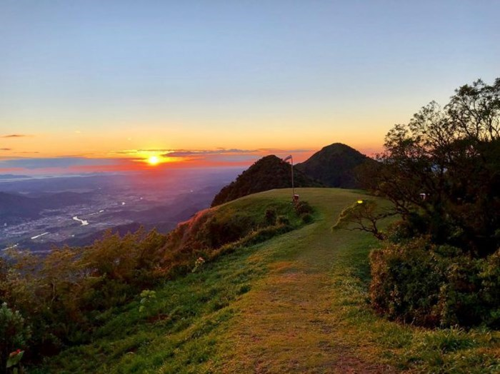
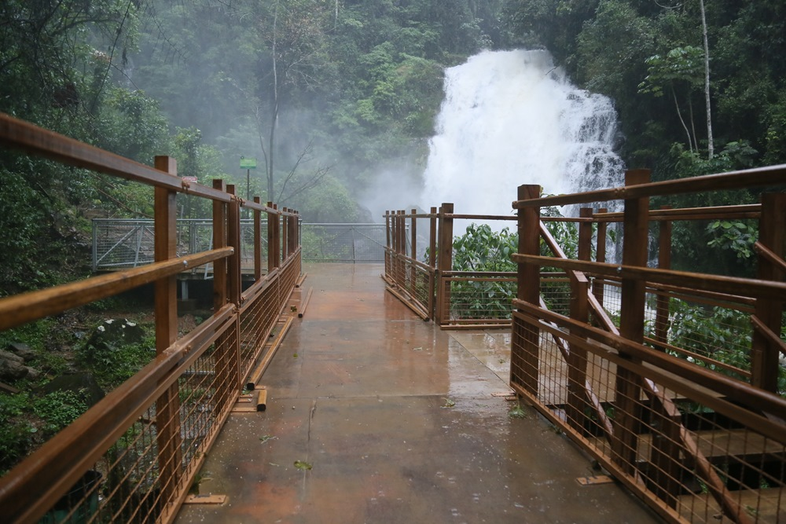
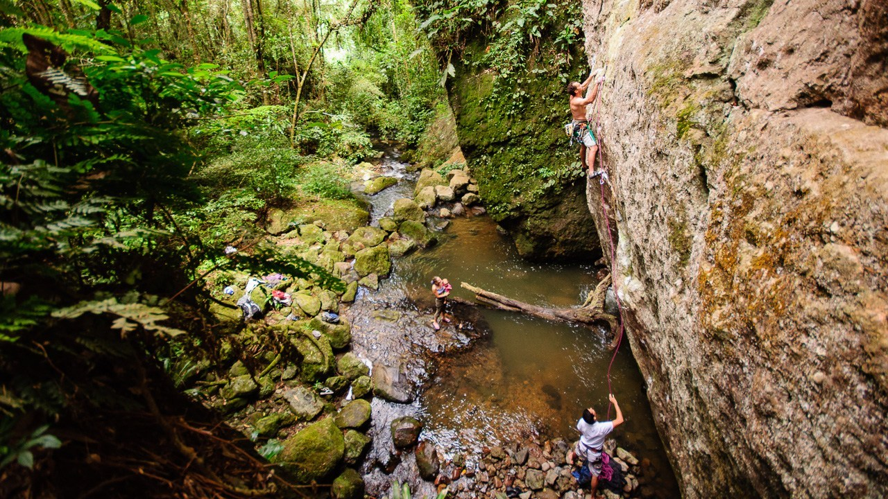

6 lugares para visitar em meio a natureza em Jaraguá do Sul e região
Fonte: OCP NEWS
No início de ano estamos sempre mais motivados e cheios de energia para fazer todos os tipos de passeios, aventuras e conhecer
lugares novos.
Para te ajudar a escolher onde aproveitar esse período, separamos aqui 6 dicas de passeios para você fazer com a família em Jaraguá
do Sul e região.
1 - Morro das Antenas

Localizado no Morro Boa Vista, o local pode ser visto de quase toda a cidade. É possível caminhar desde a base ou ir com um carro
comum até a Chiesetta Alpina e seguir de lá a pé.
Depois de uma boa caminhada em meio as árvores, pássaros e outros animais que podem aparecer ao longo do caminho, a vista com
certeza faz tudo valer a pena.
Isso sem contar nos voos de parapente feitos no local em que você pode apreciar toda Jaraguá do Sul.
2 - Rota das Cachoeiras

Corupá é uma cidade repleta de cachoeiras, as mais conhecidas são as 14 da Rota das Cachoeiras.
Ao longo do percurso você provavelmente vai encontrar muitos bichinhos, paz e tranquilidade com o som da água caindo.
São cerca de 4h de caminhada para chegar até a última, que possui 125 metros de queda. A entrada no local é paga e você pode conferir os horários de funcionamento no Portal de Turismo de Corupá.
3 - Parque Natural Braço Esquerdo

O parque fica entre São Bento do Sul e Corupá, tem um riacho, a trilha do Vale Perdido, a caverna da Fuga, a cachoeira que dá
nome ao parque, além de parede para escalada.
Com cozinha, banheiros e chuveiro com água quente, o lugar é uma ótima opção para quem gosta de acampar em meio à natureza.
4 - Morro Pelado
O local tem esse nome por conta de uma queimada que aconteceu alguns anos atrás e devastou boa parte da vegetação.
A caminhada para chegar ao topo é um tanto quanto íngreme, mas a vista lá de cima recompensa todo o esforço colocado na subida.
Para quem não sabe, o Morro Pelado fica na cidade de Schroeder.
5 - Antiga Usina
Mais uma das belezas a serem aproveitadas em Corupá.
Fundado em 1920, o espaço é uma antiga represa formada por grandes paredões de pedras, além disso, existe uma queda de água com uma
praia fluvial que podem ser ótima opção para o verão. A entrada não é gratuita e o local fica fechado no inverno.
6 - Vale do Rio Bracinho
Uma ótima opção para os praticantes de trekking, mountain bike, rapel e canoagem. O local tem trilhas que sobem para o Arroio do
Macaco, tendo cinco cachoeiras no caminho, a maior delas com 40 metros de altura.
Com churrasqueiras e piscinas naturais para banho, situado em Schroeder, também é uma boa opção para quem gosta de acampar.
Mas, se você for fazer algum desses passeios, precisa tomar cuidado com a natureza. Se levar coisas para comer ou beber,
não deixe jogado, leve uma mochila e coloque tudo dentro. E assim, quando passar por uma lixeira, ou quando chegar em casa, você coloca no local correto. E como ainda estamos passando por uma pandemia. Use máscara.
Aproveite e aprecie a natureza.
Veja Mais+
Com projeto pela criatividade, Vans doa mais de US$ 1 mil em apoio à saúde mental
Ação traz embaixadores como o skatista Tony Hawk e o músico Anderson .Paak.

.png "4 - Morro Pelado")